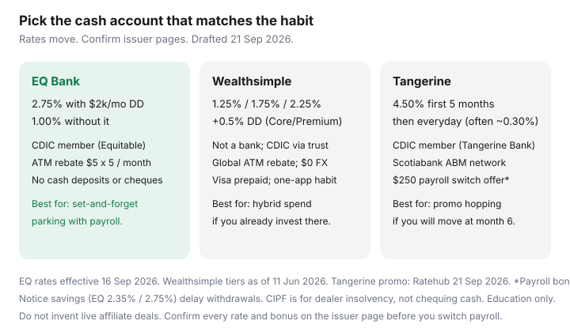

Personal Finance · Canada
EQ Bank vs Wealthsimple Cash vs Tangerine: Which Canadian Cash Account Fits Your Habit?
EQ Bank, Wealthsimple chequing, and Tangerine are the three names Personal Finance Canada threads keep putting on the same whiteboard. They are not the same product. One is a CDIC-member digital bank with a payroll-gated everyday rate. One is a fintech chequing account that is not a bank. One is Scotiabank’s digital brand with a teaser that dies on a calendar.
Pick by habit: pure parking, hybrid spending, or promo hopping. Headline rates below are public figures used 21 Sep 2026 (EQ rates effective 16 Sep 2026; Wealthsimple comparison table dated 11 Jun 2026; Tangerine promo from Ratehub 21 Sep 2026). Confirm live.
Disclosure: HISA accounts and fintech cash accounts are offer types. Saving Optimizer may later add partner links. We do not currently claim partnerships with EQ Bank, Wealthsimple, Tangerine, or Scotiabank. No invented welcome bonuses. Education only — not a recommendation to open a specific account.
Key takeaways
- EQ Personal Account: 1.00% base, 2.75% with qualifying direct deposits of $2,000+/month (ongoing while you qualify). ATM: surcharge rebates up to $5 × 5/month in Canada. CDIC via Equitable Bank.
- Wealthsimple chequing: 1.25% Core / 1.75% Premium ($100k assets) / 2.25% Generation ($500k). Core and Premium can add 0.5% with $2,000 direct deposit in 30 days. Not a bank; cash in trust at CDIC members, advertised up to $1 million if spread across 10 institutions.
- Tangerine Savings: Ratehub listed 4.50% for the first 5 months on 21 Sep 2026; everyday rate after is typically much lower (2026 roundups cite 0.30%). Scotiabank ABMs for the chequing side.
- CIPF covers investment-dealer insolvency on brokerage accounts. It is not why Wealthsimple chequing is “safer.” That cash uses a CDIC trust structure. Brokerage settlement cash is a different sleeve.
- Notice savings (EQ 10-day 2.35%, 30-day 2.75%) trade access for rate. Do not use them as the only emergency pot.
Everyday rate vs promo-then-cliff math
Run 12 months on a labelled $10,000 you will not touch, simple interest, tax extra:
| EQ Bank Personal | Wealthsimple chequing | Tangerine Savings | |
|---|---|---|---|
| What the tile says | Up to 2.75% | Up to 2.25% | 4.50% (promo window) |
| What you actually earn | 1.00% unless $2,000+/month qualifying DD; then 2.75% ongoing | 1.25% until $100k assets; 1.75% / 2.25% at Premium / Generation; +0.5% DD boost for Core/Premium | Promo for 153 days (5 months) on new-client offer terms, then the posted everyday rate |
| $10,000 × 12 months sketch | ~$275 at 2.75%; ~$100 at 1.00% | ~$125 at 1.25%; ~$175 at 1.75%; ~$225 at 2.25% | ~$205 if 4.50% for 5/12 and 0.30% for 7/12 |
| Cliff risk | Lose bonus if payroll stops, not a calendar teaser | Tier falls if you move assets out; rates can still follow the Bank of Canada | Calendar cliff — the whole product pitch is the first five months |

If you will hop every teaser, Tangerine (and Simplii’s 4.60% five-month HISA on the same Ratehub table) can win year one. If you will forget, EQ with payroll or an everyday HISA (Oaken 2.80%, Manulife Advantage 3.00% on that table) usually wins. Wealthsimple wins when you already live in that app and value FX-free travel and ATM rebates more than 50 extra basis points.
ATM and Interac access differences that matter for monthly cashflow
- EQ: EQ Bank Card. No EQ-branded ATM network. Canadian ATM fees reimbursed up to $5, five times a month. Outbound Interac e-Transfer caps: $5,000 / 24 hours, $20,000 weekly, $50,000 monthly (EQ fees-and-features page). No cash deposits, no cheques. Québec: Personal Account exists; some EQ-to-EQ features are not available.
- Wealthsimple: Visa Platinum Prepaid, ATM fee reimbursement globally on their public FAQ. Daily e-Transfer limits “up to $50,000 for eligible clients.” $0 FX fee from Wealthsimple (network conversion still applies). Overdraft: no fee plus interest from 3.95% in their June 2026 comparison table. Paycheque up to a day early with direct deposit. Cheque deposit ~6 business days.
- Tangerine: Chequing is the everyday rail; Savings is the parking pot. Free Scotiabank ABMs (thousands across Canada; Global ATM Alliance abroad on many public roundups). Cash deposits are the weak spot versus Simplii’s CIBC ATM envelopes. Confirm any Scotiabank-teller workaround on Tangerine’s own help pages before you rely on it.
If the household still handles cash rent or a side business float, Simplii’s CIBC ATM deposits usually beat all three of these as the spending account — then park at EQ. See the no-fee stack.
Direct-deposit bonuses and rate tiers (verify live numbers at draft)
EQ’s 2.75% is not a new-client teaser. It is a monthly qualification: $2,000 or more of eligible direct deposits, applied within the first two weeks of the following month, ongoing while you meet the threshold (EQ Personal Account page, used 21 Sep 2026). Interac e-Transfers you send yourself generally do not count — read the eligible-deposit list.
Wealthsimple’s 0.5% boost (Core and Premium) needs at least $2,000 of direct deposit in a 30-day window. Generation already sits at 2.25% and is not eligible for that extra 0.5%. Asset tiers are household-with-Wealthsimple totals, not the chequing balance alone.
Tangerine’s new-client payroll offer (homepage legal, used 21 Sep 2026) is a $250 cash bonus for new clients who open chequing and switch eligible payroll of at least $200/month for specified months, with client numbers created between 1 May 2024 and 31 Oct 2026. That is a switching bonus, not the savings rate. The Two Rate Savings Offer runs 153 days. Offers change; screenshot the terms.
Notice savings accounts: higher rate traded for withdrawal delay
EQ’s 10-day notice savings posted 2.35% and 30-day 2.75% on 16 Sep 2026 — matching the Personal Account bonus rate if you can wait a month. Use notice for property tax, a known insurance deductible, or a tuition date. Do not use it for the furnace. Tangerine and Wealthsimple chequing are designed for same-day access; they are the wrong tool if you want to add friction on purpose. A separate named EQ account with no notice is the friction-free sibling.
How CIPF vs CDIC framing differs when cash sits at a brokerage platform
Three different protections get mashed together in forum posts:
- CDIC — deposit insurance if a member bank fails. Eligible deposits, $100,000 per category per member. EQ/Equitable and Tangerine Bank are members.
- Wealthsimple chequing CDIC trust — Wealthsimple Payments / Investments are not CDIC members. Client cash is held in trust at CDIC-member institutions. Their public claim (used 21 Sep 2026) is combined coverage up to $1 million CAD if funds are spread across at least 10 members, $100,000 per member, subject to disclosure rules. Joint funds follow the primary holder in their FAQ. This is still CDIC, via a trust, not a “Wealthsimple CDIC membership.”
- CIPF — Canadian Investor Protection Fund. Protects client assets at a CIRO dealer if the dealer becomes insolvent, within CIPF limits. It does not insure market losses. Wealthsimple’s legal pages distinguish registered savings cash (also CDIC trust language) from investment accounts. Do not park an emergency fund in a brokerage settlement balance because someone said “CIPF is $1 million.” Read which sleeve the dollars sit in.
Ratehub’s 21 Sep 2026 table listed CI Direct Investing’s HISA as CIPF — a clean example of a cash-like product that is not a bank deposit. If the page says CIPF and not CDIC, treat it as brokerage cash.
Pick by use-case: pure parking, hybrid spending, or promo hopping
- Pure parking. Everyday rate + CDIC member you understand. EQ with payroll, or Oaken/Manulife if you do not need EQ’s bill-pay. Keep PADs elsewhere.
- Hybrid spending. Wealthsimple if you already invest there, travel (FX), and want one app. EQ if payroll can land there and you can live with ATM rebates instead of a Big-5 network. Tangerine chequing if Scotiabank ABMs and Scene+ matter more than the savings rate.
- Promo hopping. Tangerine/Simplii teasers, calendar the cliff, move Bucket B only. Requires the two-bucket setup so rent never sits in a promo account.
Sources & date stamps
- EQ Bank rates (effective 16 Sep 2026) and Personal Account / fees-and-features pages — 2.75% DD gate, e-Transfer limits, ATM rebate, Equitable Bank CDIC note (used 21 Sep 2026).
- Wealthsimple chequing (wealthsimple.com/en-ca/cash) — tiers, DD boost, ATM/FX, CDIC trust up to $1M across 10 members; comparison data as of 11 Jun 2026 (used 21 Sep 2026).
- Ratehub.ca HISA table — Tangerine 4.50% first 5 months; EQ 2.75%; Wealthsimple 1.75%–2.25% row (21 Sep 2026, 1:22 p.m.).
- Tangerine.ca legal — $250 new-client payroll offer (client numbers 1 May 2024–31 Oct 2026); Two Rate Savings Offer 153 days (used 21 Sep 2026).
- CDIC “What’s covered”; Wealthsimple help “How we keep your money safe” — CIPF vs CDIC trust distinction.
Frequently asked questions
Is Wealthsimple Cash still a thing in 2026?
Wealthsimple’s consumer page now leads with a no-monthly-fee chequing account that earns interest. The old “Cash” nickname still shows up in comparison tables (including Ratehub’s 21 Sep 2026 HISA list). Functionally you are comparing EQ and Tangerine to Wealthsimple chequing — confirm the product name on the app before you move payroll.
Who wins if I will not move money when a promo ends?
Usually EQ at 2.75% with qualifying payroll, or another everyday HISA around 2.8%–3.0% (Oaken 2.80%, Manulife Advantage 3.00% on Ratehub 21 Sep 2026). A 4.50% teaser that becomes ~0.30% loses a labelled $10,000 comparison over 12 months.
Is Wealthsimple CDIC-insured?
Wealthsimple is not a CDIC member. Chequing balances are held in trust at CDIC-member banks. Their public description is up to $1 million combined if funds are spread across at least 10 members. EQ and Tangerine are themselves members, with the usual $100,000 per category (EQ aggregates with Equitable Bank).
Can I use EQ as my only bank?
Possible if you can live without cash deposits, cheques, bank drafts, and in-branch help — EQ says the Personal Account is not right if you need those. ATM access is rebate-based, not a branded network. Many households keep a tiny Simplii or Tangerine account for cash and CIBC/Scotia machines.
Does CIPF protect my Wealthsimple chequing balance?
Do not assume that. CIPF is dealer-insolvency protection for investment accounts. Wealthsimple describes chequing cash as a CDIC trust at partner banks. Read the chequing disclosure, not a generic “CIPF $1 million” meme.